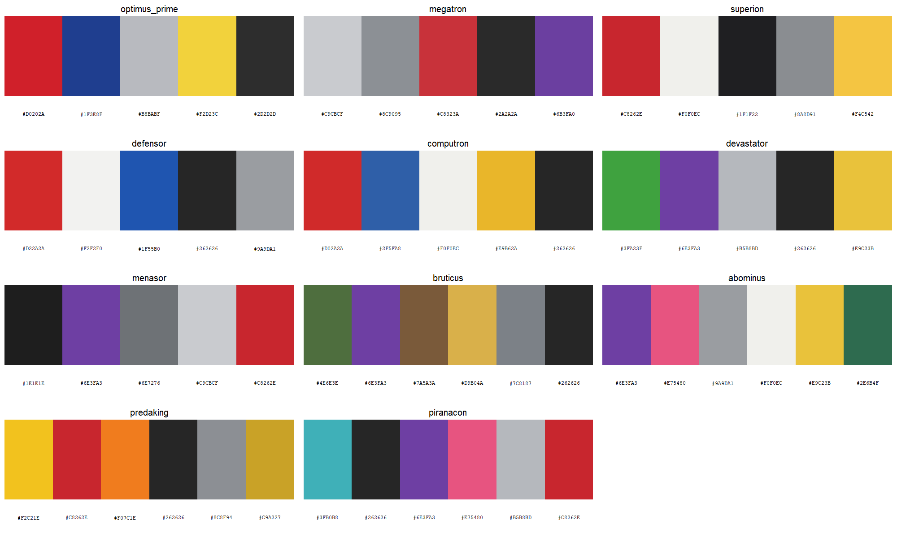
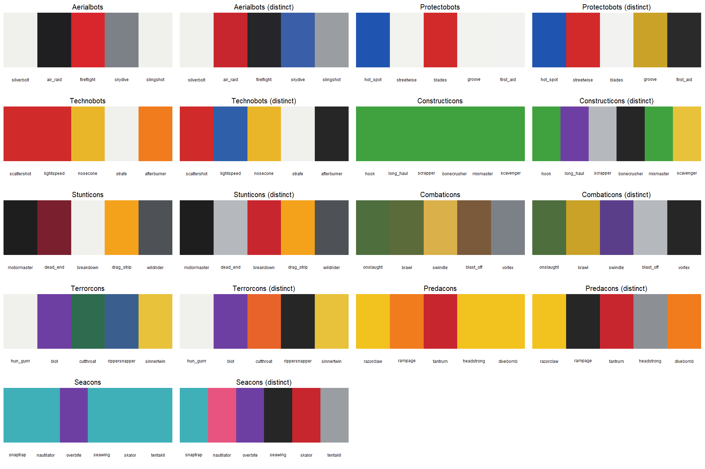
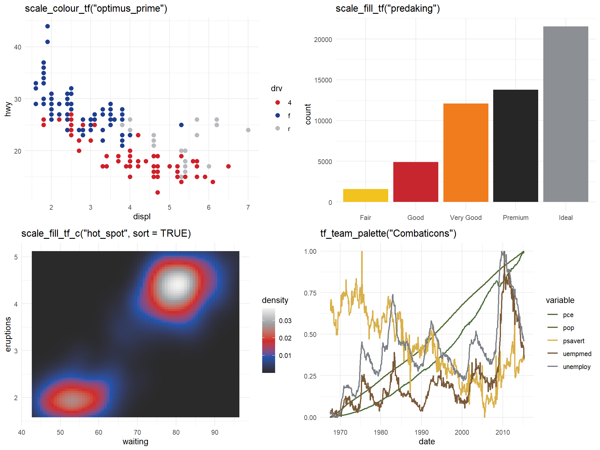
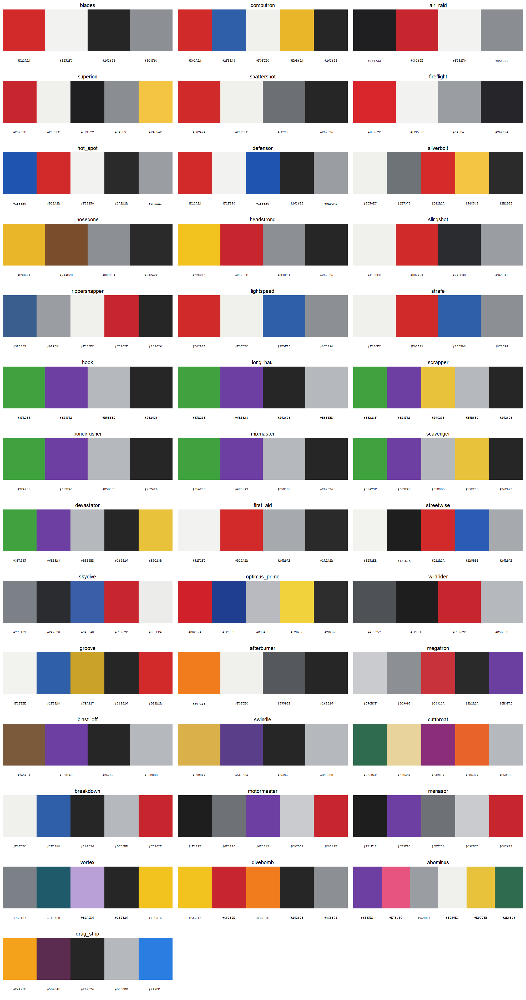

Colour palettes for R and ggplot2 based on the original Generation 1 Transformers toys: Optimus Prime, Megatron, and every member and combined form of the core combiner teams, from the Aerialbots and Superion to the Seacons and Piranacon. It works the same way as packages like wesanderson: pick a character by name, get a vector of hex colours, or drop a scale straight into a ggplot. Because the combiner teams are sets of five or six figures, each team also gives a ready-made categorical palette with one colour per member.
transformeRs is a fan project and is not affiliated with or endorsed by Hasbro or Takara Tomy. Hex values are approximations of the toys’ plastic, chrome and paint colours; see “How the palettes were made” below.
Browse online
Every palette, with its colours, toy photo and Transformers Wiki link, is browsable and filterable at https://bmaitner.github.io/transformeRs/articles/browse.html. Each card has a Suggest a change link that opens a prefilled GitHub issue, and there is a form to request a character who is not covered yet. WISHLIST.md lists what is queued.
Installation
# install.packages("pak")
pak::pak("bmaitner/transformeRs")Usage
library(transformeRs)
# what is covered
tf_factions()
tf_teams()
table(tf_characters$team, tf_characters$faction)
# palette names, optionally for one faction, team or role
tf_palette_names()
tf_palette_names(team = "Constructicons")
tf_palette_names(role = "combined form")
# the colours of one character (prints the swatches and the hex codes)
tf_palette("optimus_prime")
#> Transformers palette 'optimus_prime' (5 colours)
#> Autobot: Optimus Prime
#> #D0202A #1F3E8F #B8BABF #F2D23C #2D2D2D
# first three colours, a 12-step gradient, or the same gradient dark-to-light
tf_palette("Megatron", 3)
tf_palette("devastator", 12, type = "continuous")
tf_palette("hot_spot", 12, type = "continuous", sort = TRUE)
# swatches with hex codes, for a team or faction at a time
tf_show_palettes(team = "Aerialbots")
tf_show_palettes(faction = "Decepticon", role = "combined form", ncol = 3)
Team palettes
tf_team_palette() takes one colour from each member of a combiner team, in the team’s order (torso first, then limbs), and names each colour after the member it came from. The body colours are faithful but collapse for teams cast from shared plastics, so distinct = TRUE picks, for each member, the colour from its palette that is furthest from the colours chosen so far.
tf_team_palette("Stunticons")
#> Transformers team palette 'stunticons' (5 colours)
#> motormaster = #1E1E1E
#> dead_end = #7A1F2E
#> breakdown = #F0F0EC
#> drag_strip = #F2C21E
#> wildrider = #4E5257
tf_team_palette("Constructicons") # six shades of green
tf_team_palette("Constructicons", distinct = TRUE) # green, purple, silver, ...
ggplot2
scale_colour_tf() and scale_fill_tf() build a discrete scale by default, or a continuous gradient with discrete = FALSE. The explicit _d and _c variants and the American scale_color_* spellings are also exported. sort = TRUE on a continuous scale orders the palette from darkest to lightest first. Team palettes go through scale_colour_manual().
library(ggplot2)
ggplot(mpg, aes(displ, hwy, colour = drv)) +
geom_point(size = 2.5) +
scale_colour_tf("optimus_prime")
ggplot(diamonds, aes(cut, fill = cut)) +
geom_bar() +
scale_fill_tf("predaking")
ggplot(faithfuld, aes(waiting, eruptions, fill = density)) +
geom_raster() +
scale_fill_tf_c("hot_spot", sort = TRUE)
ggplot(economics_long, aes(date, value01, colour = variable)) +
geom_line() +
scale_colour_manual(values = unname(tf_team_palette("Combaticons")))
Set reverse = TRUE to flip a palette. If a discrete variable has more levels than a palette has colours, the palette is interpolated so every level still gets a colour, at some cost to legibility.
Finding a palette that works for a plot
Toy colours were chosen to look good on a shelf, not on a chart. tf_find_palettes() shortlists the palettes whose colours hold up for a given job, judged from the colours themselves:
tf_find_palettes("categorical") # every pair of colours clearly distinct
tf_find_palettes("colorblind") # still distinct under simulated CVD
tf_find_palettes("sequential") # one hue, wide lightness range
tf_find_palettes("diverging") # two hues with a light colour between
# restrict to a faction or team, or see the shortlist as swatches
tf_find_palettes("colorblind", faction = "Autobot")
tf_show_palettes(use = "colorblind", ncol = 3)
The judgments come from tf_palette_stats(), which reports the smallest pairwise distance between colours in CIE Lab, the same after simulating deuteranopia, protanopia and tritanopia, the lightness range, and the hue spread. The thresholds are simple heuristics, so treat the result as a shortlist to look at rather than a guarantee.
Character background
tf_characters is a data frame with one row per palette: the character, faction, combiner team and combined form, its role in the team, alternate mode, the year of the original toy, a description of the colours, and links to the character’s page and toy photograph on the Transformers Wiki.
t(tf_characters[tf_characters$palette == "drag_strip", ])
#> palette "drag_strip"
#> character "Drag Strip"
#> faction "Decepticon"
#> team "Stunticons"
#> combiner "menasor"
#> role "combiner limb"
#> alt_mode "Tyrrell P34 six-wheeled race car"
#> year "1986"
#> n_colours "5"
#> description "Yellow-orange race car plastic with dark plum head and blaster, ..."
#> source "https://tfwiki.net/wiki/Drag_Strip_(G1)"
#> image "https://tfwiki.net/mediawiki/images2/c/c2/G1Dragstrip_toy.jpg"Coverage
| Team | Faction | Members | Combined form | Year |
|---|---|---|---|---|
| (leaders) | both | Optimus Prime, Megatron | 1984 | |
| Aerialbots | Autobot | Silverbolt, Air Raid, Fireflight, Skydive, Slingshot | Superion | 1986 |
| Protectobots | Autobot | Hot Spot, Streetwise, Blades, Groove, First Aid | Defensor | 1986 |
| Technobots | Autobot | Scattershot, Lightspeed, Nosecone, Strafe, Afterburner | Computron | 1987 |
| Constructicons | Decepticon | Hook, Long Haul, Scrapper, Bonecrusher, Mixmaster, Scavenger | Devastator | 1985 |
| Stunticons | Decepticon | Motormaster, Dead End, Breakdown, Drag Strip, Wildrider | Menasor | 1986 |
| Combaticons | Decepticon | Onslaught, Brawl, Swindle, Blast Off, Vortex | Bruticus | 1986 |
| Terrorcons | Decepticon | Hun-Gurrr, Blot, Cutthroat, Rippersnapper, Sinnertwin | Abominus | 1987 |
| Predacons | Decepticon | Razorclaw, Rampage, Tantrum, Headstrong, Divebomb | Predaking | 1986 |
| Seacons | Decepticon | Snaptrap, Nautilator, Overbite, Seawing, Skalor, Tentakil | Piranacon | 1988 |
Palette names are the character’s name in snake_case (hun_gurrr, blast_off); tf_palette() also accepts "Hun-Gurrr" and "Blast Off". Every team is drawn in man/figures/palettes-<team>.png. Characters and teams that are lined up to be added next are listed in WISHLIST.md; add a line there, or open a request.
How the palettes were made
There is no published set of hex values for Transformers toys, so these are approximations built by hand:
- Each character was matched to its original Hasbro release on the Transformers Wiki, and to the wiki’s photo of that toy in robot mode. The page and the photo are the
sourceandimagecolumns oftf_characters. - The plastic, chrome, die-cast and paint colours of that toy were listed from the photo and the wiki’s own description of the release, and a hex value chosen for each by eye. Colours are ordered body plastic first, then secondary plastic, then accents, so the first few colours in each palette are the most distinct.
- Members of one combiner team share plastics, so their palettes share hex values on purpose. The combined form’s palette takes one colour from each contributing part.
Palettes range from four to six colours. Chrome and die-cast parts do not reduce to a single flat colour; a silver or grey stands in for them. Wiki photos vary in lighting, so expect some palettes to be rough, and the least certain ones are flagged in WISHLIST.md. Corrections are welcome, ideally with a photograph of the toy under neutral light. Use the palette browser to open a prefilled issue for a specific palette, or pick a form from the issue templates. tf_show_palettes() prints the hex codes under each swatch to make reporting easy.